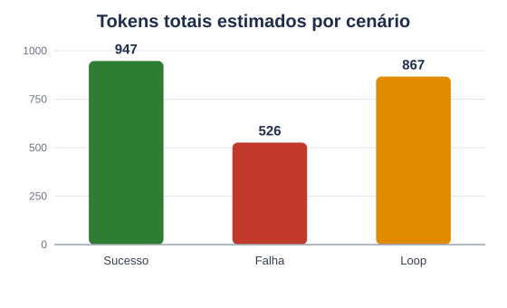
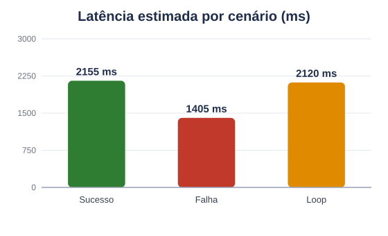

Abrindo a Caixa-Preta de Agentes de IA
01 Contexto & Motivação
Arquiteturas agênticas operam com fluxos não-determinísticos: chamadas assíncronas a LLMs, decisões em tempo de execução e tool calling dinâmico.
Quando o agente falha, surge a opacidade sistêmica — é difícil saber se o erro veio do prompt, de uma alucinação, da passagem de argumentos ou de um loop.
Sem rastreabilidade granular, depurar e controlar custo e latência em produção é inviável. Observabilidade e tracing tornam cada decisão auditável.
02 Conceitos-Chave
04 Arquitetura & Método
3 cenários induzidos — sucesso, falha controlada e loop — disparam a captura automática de spans. LLM mockado e determinístico: roda sem chaves de API.
03 Estado da Arte
| Ferramenta | Foco | Ref. |
|---|---|---|
| OpenTelemetry padrão | Convenções semânticas Gen-AI & Agent Spans | [4][5] |
| OpenLLMetry Traceloop | Instrumentação automática sobre OTel | [6] |
| Arize Phoenix | UI local de traces e evals de LLM | [7] |
| LangSmith | Tracing nativo p/ LangChain/LangGraph | [1][2] |
| Langfuse | Data model aberto de tracing | [3] |
| Anthropic | Observabilidade multiagente | [8] |
★ Números & Stack
06 Discussão & Limitações
✓ O que funcionou
- Captura automática de spans Gen-AI, sem instrumentar cada nó.
- Erro de tool isolado e destacado, com stack trace navegável.
- Loop de recursão visível e contido por
recursion_limit. - Custo, tokens e latência mensuráveis por cenário.
! Limitações
- LLM mockado: custo/latência são estimativas, não medidas.
- Phoenix local, sem coletor distribuído nem persistência longa.
- Tokens via heurística (~4 chars/token), não tokenizer oficial.
➜ Próximos passos
- Plugar OpenAI/Ollama reais para custo e latência medidos.
- Adicionar evals do Phoenix e alertas de custo via OTLP Collector.
05 Experimento & Demo — 3 cenários instrumentados
search_customer_db → call_logistics_api(#9834) → resposta consolidada. Árvore de spans aninhada.call_logistics_api("9901") lança ValueError. Span fica vermelho com stack trace — sem quebrar a app.recursion_limit=5 → GraphRecursionError. Padrão repetitivo visível na timeline.| Cenário | Spans | LLM | Tools | Erros | Passos | Tokens* | Latência* | Custo* |
|---|---|---|---|---|---|---|---|---|
| Sucesso | 6 | 3 | 2 | 0 | 5 | 947 | 2,2 s | $0,00022 |
| Falha | 4 | 2 | 1 | 1 | 3 | 526 | 1,4 s | $0,00011 |
| Loop | 6 | 3 | 2 | 0 | 5 | 867 | 2,1 s | $0,00018 |
| TOTAL | 16 | 8 | 5 | 1 | 13 | 2340 | 5,7 s | $0,00050 |
Spans, LLM, tools, erros e passos são contagens exatas.
(*) Tokens, latência e custo são estimativas (LLM mockado) — app/collect_metrics.py
(~4 chars/token; preços GPT-4o-mini).



docs/phoenix-sucesso.png
docs/phoenix-erro.png